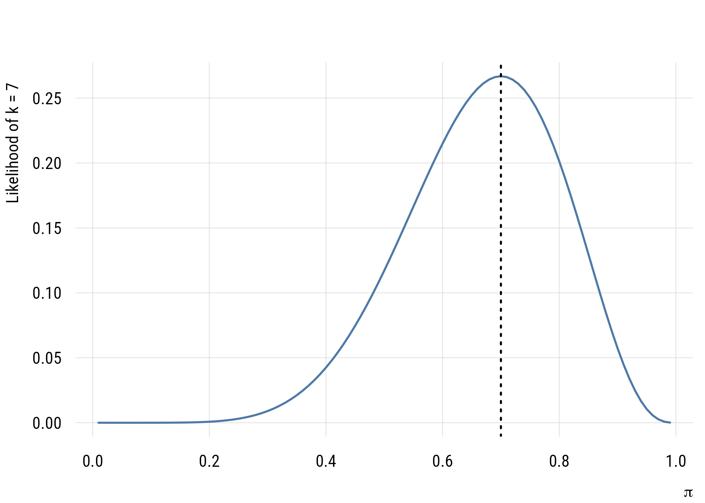
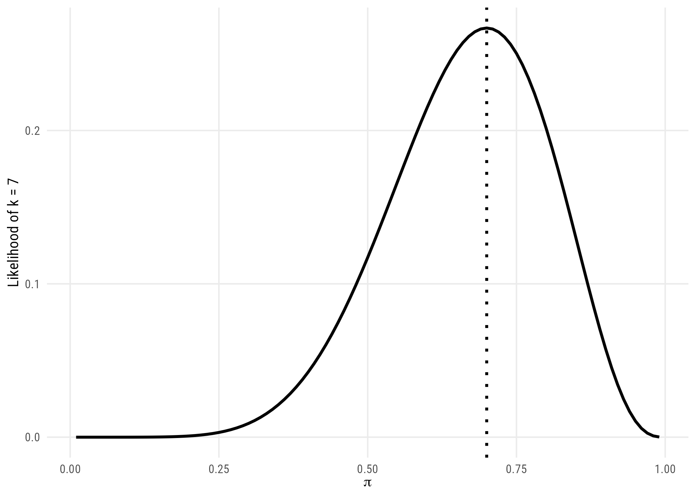
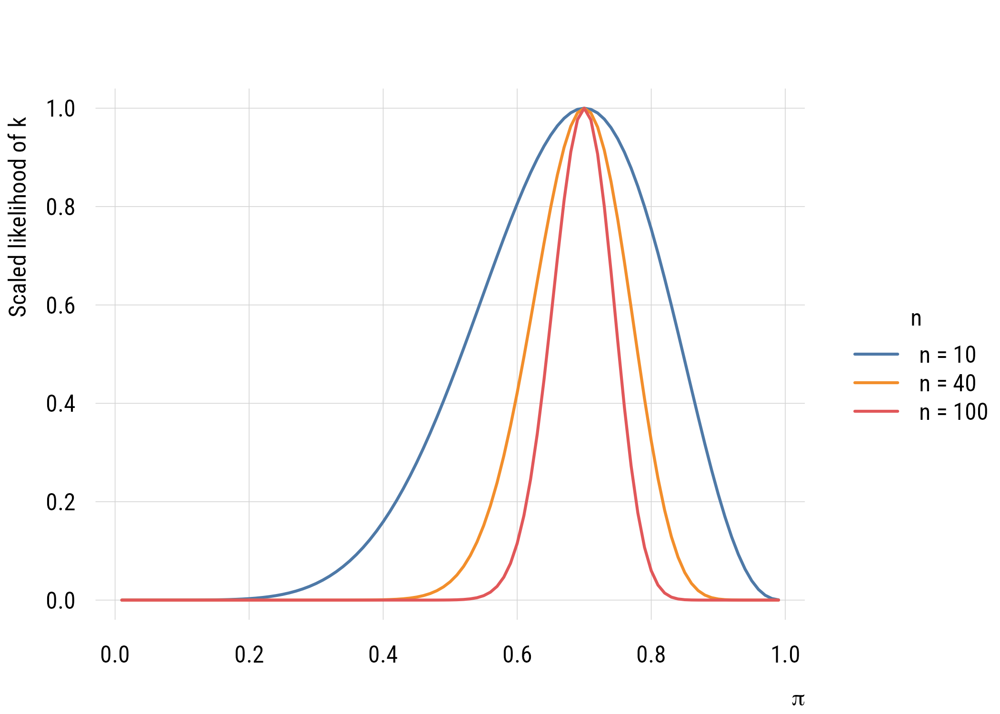
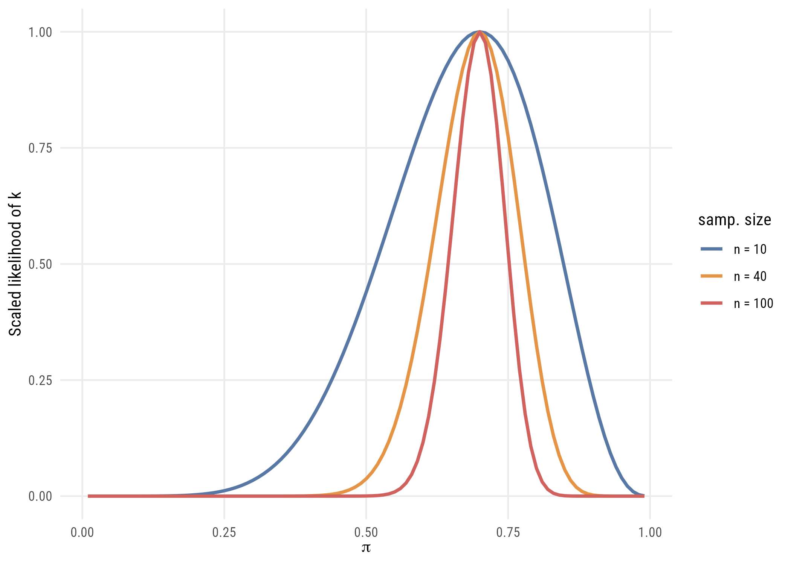

states <- as.data.frame(state.x77) |>
rename(life_exp = `Life Exp`, hs_grad = `HS Grad`) |>
mutate(south = state.region == "South")9 Likelihood
So far we have been interested in minimizing the sum of squared residuals. This makes sense when we’re dealing with an outcome whose residuals can be modeled as a normal distribution. But, as we’ll see later, that’s not always the case.
It turns out that minimizing the sum of squared residuals is equivalent to maximizing the likelihood of the observations. Which is a procedure we can use with basically every kind of model later on.
9.1 Probability and likelihood
When we talk about the probability of an event, this is inherently forward looking. For example, what is the probability of getting exactly two heads on three flips of a fair coin?
dbinom(2, size = 3, prob = 0.5)[1] 0.375Likelihood, by contrast, is backward looking. It starts with events that have already happened and reasons back to the parameters that generated them. For example, what is the most likely value of \(\pi\) for a coin that actually flipped heads two out of three times?
We ask different conditional questions depending on what we have and what we don’t. For probability, we ask: what is the probability of a data distribution given the model? For likelihood, we ask: what is the likelihood of a model given a data distribution?
Note
We’ve already been using likelihood without realizing it. If we find that 560 people out of 1000 support abortion rights in our data, we infer that \(p = .56\) is the most likely value of the population parameter.
Sometimes people think MLE is fancy. But \(\bar{x} = \left(\sum_i^n x_i\right)/n\) is the maximum likelihood estimate of \(\mu\).
9.1.1 Grid approximation
To get a flavor of how this works, assume we want to estimate the proportion of current sociology PhD students who have at least one parent with a graduate degree. Let’s say we take a random sample and find that 7 out of 10 do.
The MLE estimate is easy: \(\hat{\pi} = .7\). But how much better is this estimate than others we might consider?
c(pi_0.70 = dbinom(7, size = 10, prob = 0.70),
pi_0.65 = dbinom(7, size = 10, prob = 0.65)) pi_0.70 pi_0.65
0.2668279 0.2522196 There’s not much difference. In fact, \(\pi = .7\) is only about 5.8% more likely to have produced the observed data than \(\pi = .65\).
To find the MLE of our data we can do a fancy version of “guess and check” called grid approximation.
grid <- data.frame(pi = seq(0.01, 0.99, by = 0.01))
grid$likelihood <- dbinom(7, size = 10, prob = grid$pi)
grid$pi[which.max(grid$likelihood)][1] 0.7plt(likelihood ~ pi, data = grid, type = "l", lwd = 2,
xlab = expression(pi), ylab = "Likelihood of k = 7")
abline(v = 0.7, lty = 3, lwd = 2)
ggplot(grid, aes(x = pi, y = likelihood)) +
geom_line(linewidth = 1) +
geom_vline(xintercept = 0.7, linetype = "dotted", linewidth = 1) +
labs(x = expression(pi), y = "Likelihood of k = 7")
Consider the following scenarios: 7 out of 10, 28 out of 40, 70 out of 100. Would the likelihoods be different in these situations?
sharpen <- map(c(10, 40, 100), \(n) {
data.frame(n = paste("n =", n),
pi = seq(0.01, 0.99, by = 0.01),
lik = dbinom(0.7 * n, size = n, prob = seq(0.01, 0.99, by = 0.01)))
}) |>
list_rbind()
sharpen <- sharpen |>
group_by(n) |>
mutate(scaled = lik / max(lik)) |>
ungroup() |>
mutate(n = factor(n, levels = c("n = 10", "n = 40", "n = 100")))plt(scaled ~ pi | n, data = sharpen, type = "l", lwd = 2,
xlab = expression(pi), ylab = "Scaled likelihood of k")
ggplot(sharpen, aes(x = pi, y = scaled, color = n)) +
geom_line(linewidth = 1) +
labs(x = expression(pi), y = "Scaled likelihood of k", color = "samp. size")
These likelihood distributions can be used to construct confidence intervals, though they rarely are used directly in that way in practice. But the principle of MLE and how it relates to sample size should be pretty clear from this exercise.
9.2 Likelihood and the sum of squares
The relationship between the residual sum of squares (RSS) and the log likelihood of the observations is1:
1 You do NOT have to memorize this. But it’s good to think about.
\[\ell = -\frac{n}{2}\left[1+\log(2\pi)+\log\!\left(\frac{\mathrm{RSS}}{n}\right)\right]\]
Here’s a quick comparison in R for you to see the equivalence.
fit <- lm(life_exp ~ 1, data = states)
rss <- deviance(fit)
n <- nobs(fit)
c(from_rss = -(n / 2) * (1 + log(2 * pi) + log(rss / n)),
logLik = as.numeric(logLik(fit))) from_rss logLik
-85.16457 -85.16457 9.3 Evaluating likelihoods
If you really want to understand likelihood, it’s valuable to think about it as a pointwise or rowwise quantity. That is, given a specific model, you can evaluate the likelihood of any individual observation.
Fifty cases isn’t very many but it will be even easier to understand what we’re doing with an even smaller sample. So let’s restrict the sample to the southern US states.
s_states <- states |> filter(south)
nrow(s_states)[1] 169.3.1 Null model likelihood
We can write this null model like this, which is a little different than you may have seen. But it will generalize well to other types of models.
\[\begin{align} \text{lifeexp}_i &\sim \mathcal{N}(\mu_i, \sigma) \\ \mu_i &= \beta_0 \end{align}\]
This representation allows for a direct representation of the likelihood. Sometimes this representation is called the generalized linear model, which is composed of two parts:
- A distributional family for the outcome
- A linear predictor that links conditional expectations to the key parameter in that family (here, \(\mu_i\), or the conditional mean)
We can get the likelihood of the model given the data either the easy way…
mc <- lm(life_exp ~ 1, data = s_states)
logLik(mc)'log Lik.' -22.53801 (df=2)Or we can get it the hard way. Because the normal is a continuous distribution, these likelihood values are probability densities. So each value is a likelihood contribution to the overall likelihood.
mu_hat <- coef(mc)[1]
sigma_hat <- sqrt(mean(residuals(mc)^2))
lik_c <- dnorm(s_states$life_exp, mean = mu_hat, sd = sigma_hat)
round(head(lik_c), 4)[1] 0.3235 0.2534 0.3781 0.2534 0.2013 0.3724Here are the log-likelihoods (which we actually use):
ll_c <- dnorm(s_states$life_exp, mean = mu_hat, sd = sigma_hat, log = TRUE)
round(head(ll_c), 4)[1] -1.1284 -1.3729 -0.9725 -1.3729 -1.6029 -0.9878And here’s the sum, which is the model log-likelihood.
c(by_hand = sum(ll_c), from_R = as.numeric(logLik(mc))) by_hand from_R
-22.53801 -22.53801 9.3.2 Augmented model likelihood
As before, we will add the predictor here so that we make different predictions for different cases.
\[\begin{align} \text{lifeexp}_i &\sim \mathcal{N}(\mu_i, \sigma) \\ \mu_i &= \beta_0 + \beta_1\,\text{hsgrad}_i \end{align}\]
ma <- lm(life_exp ~ hs_grad, data = s_states)
ll_a <- dnorm(s_states$life_exp, mean = fitted(ma),
sd = sqrt(mean(residuals(ma)^2)), log = TRUE)
c(by_hand = sum(ll_a), from_R = as.numeric(logLik(ma))) by_hand from_R
-18.73661 -18.73661 And even compare them. This is how much more (or less) likely each point is given Model A’s predictions compared to Model C’s. You can see that most get better although a few do get worse.
round(exp(ll_a - ll_c), 3) [1] 1.450 0.368 0.832 2.013 1.588 0.571 1.322 1.307 1.334 1.414 2.838 2.518
[13] 0.941 1.432 1.362 1.296You can see that the log-likelihood of Model A (-18.74) is higher/better than the log-likelihood of Model C (-22.54). But how can we interpret this comparison?
ll_diff <- as.numeric(logLik(ma)) - as.numeric(logLik(mc))
exp(ll_diff)[1] 44.76381Exponentiating the log-likelihood difference tells us that Model A is about 45 times more likely than Model C given the data. That seems like a lot! But remember that any more complicated model is going to be at least somewhat more likely. So what is a more systematic way to compare them?
9.4 Comparing model likelihoods
9.4.1 Likelihood ratio test
It turns out that two times the log-likelihood difference can be used as a test statistic (often called \(G^2\)) for testing the null hypothesis that any parameters you added could be set to zero.2
2 In this case, of course, we only added one parameter, so there are several ways we could test this null hypothesis. These include the \(t\)- or (1 numerator df) \(F\)-test that you’ve seen already. But there are others.
3 We might point out that \(t\) is to \(F\) as \(z\) is to \(\chi^2\). We could also say that \(t\) is to \(z\) as \(F\) is to \(\chi^2\). Both \(t\) and \(F\) are “small sample” statistics whereas \(z\) and \(\chi^2\) are “large sample” or “asymptotic” statistics. The advantage of these asymptotic statistics is that they generalize to almost every type of statistical model, not just linear regression.
This is almost exactly like the \(F\) test that you know already. The only difference is that instead of looking up an \(F\) statistic on an \(F\) table, you look up the \(G^2\) statistic on the \(\chi^2\) (“chi-square”) table with \(df\) equal to the number of parameters that differ between the models (just like numerator \(df\) in the \(F\) distribution).3
\[G^2 = 2 \bigl[ \ell(\hat{\theta_1}) - \ell(\hat{\theta_0}) \bigr] \overset{\text{approx}}{\sim} \chi^2_{df}\]
g_squared <- 2 * ll_diff
c(G2 = g_squared,
p_LRT = 1 - pchisq(g_squared, df = 1),
p_F = anova(mc, ma)$`Pr(>F)`[2]) G2 p_LRT p_F
7.602800217 0.005827772 0.011229716 The p-value from the LRT is smaller than what we’d get from the same \(F\) test, although both values are pretty small. The former is smaller because the \(\chi^2\) is essentially an \(F\) distribution with infinite denominator degrees of freedom, so there is less mass in the tail of the distribution. In other words, weird stuff (i.e., “right tail” stuff) is less likely to occur as a process goes to infinity.
Warning
anova() will not give you the LRT for lm objects
With pretty much everything except lm-class objects, the anova() function (e.g., anova(mc, ma)) will give you the LRT. For lm objects, however, you get the \(F\) test by default. And if you add the argument test = "LRT" or test = "Chisq" to the anova() call, you will, very confusingly, not be given the LRT but the Wald \(\chi^2\) test (which is not the same thing as the LRT but rather looking up the \(F\)-statistic on the \(\chi^2\) reference distribution).
c(true_LRT = 1 - pchisq(g_squared, 1),
what_anova_gives = anova(mc, ma, test = "LRT")[["Pr(>Chi)"]][2]) true_LRT what_anova_gives
0.005827772 0.003520105 Use lmtest::lrtest(), or compute \(G^2\) by hand as above.
9.4.2 Deviance
Deviance (\(D\)) is a term that generally means \(-2\) times the log-likelihood (\(\ell\)) of a model. In other words:
\[D_{\text{M}} = -2\ell_{\text{M}}\]
The deviance is a likelihood-based way of answering the question “how far away are the predictions of this model from the data?” Lower deviance is better. This is in spirit the likelihood version of the sum-of-squares, where lower is also better.
Important
deviance() on an lm object is not \(-2\ell\)
This can be confusing because the function deviance() used on an lm object will return the residual sum of squares (RSS or SSE), which is NOT the same thing as \(-2\ell\).4 To prove it, let’s compare the likelihood-based deviance of model A with its RSS.
c(deviance_function = deviance(ma),
minus_2_loglik = -2 * as.numeric(logLik(ma)))deviance_function minus_2_loglik
9.745332 37.473228 You can see they are not the same!
4 Even though it’s confusing, it at least makes some sense because the RSS is a measure of how far away the model predictions are from the data. Which is, of course, what deviance means in spirit.
9.4.3 Proportional reduction of deviance
You will sometimes see PRD written as:
\[PRD = \frac{D_C - D_A}{D_C}\]
This is reasonable for some other models, but it won’t work properly for linear models for technical reasons,5 so it’s better to use a different formula.
5 It’s this pesky \(\sigma\) estimate that is causing the problems. Deviance means comparing models to a theoretical “perfect” (or “saturated”) model. With linear regression, that’s an RSS of zero. But that doesn’t make sense with likelihood-based deviance here because as RSS goes to zero, \(\sigma\) goes to zero, which means likelihood goes to infinity. So we can’t directly use the ratio of likelihoods without taking the difference first (which cancels the “saturated” likelihoods out of the equation).
First we need the “deviance drop” or difference in deviance between the null and augmented model:
\[\Delta D = D_C - D_A\]
Then we can use that \(\Delta D\) in the equation below (as long as Model C is a null, i.e., intercept-only, model).
\[R^2 = \frac{\text{RSS}_C - \text{RSS}_A}{\text{RSS}_C} = 1 - \exp \left( \frac{-\Delta D}{n} \right)\]
As implied by this equality, either formula will give exactly the same \(R^2\) for a linear regression model.6
6 The \(\Delta D\) version is called the Cox-Snell pseudo \(R^2\), although it’s not really “pseudo” for linear regression since it’s exactly the same as the good-old-fashioned \(R^2\). There are other pseudo \(R^2\) values you might learn about someday; Appendix C has more.
delta_D <- (-2 * as.numeric(logLik(mc))) - (-2 * as.numeric(logLik(ma)))
c(cox_snell = 1 - exp(-delta_D / nobs(ma)),
ordinary_r2 = summary(ma)$r.squared,
naive_PRD = delta_D / (-2 * as.numeric(logLik(mc)))) cox_snell ordinary_r2 naive_PRD
0.3782238 0.3782238 0.1686662 You can confirm that the first two are the same. The naive PRD is not.
9.5 Recap
- probability reasons from parameters to data; likelihood reasons from data to parameters
- familiar estimators like \(\bar{x}\) and \(\hat{p}\) are maximum likelihood estimates
- likelihood is a rowwise quantity, and the log-likelihoods sum to the model’s
- for normal models, maximum likelihood and least squares give identical answers
- the likelihood ratio test uses \(G^2 = 2(\ell_A - \ell_C)\) against \(\chi^2\)
anova(..., test = "LRT")onlmobjects gives the Wald \(\chi^2\) instead- deviance is \(-2\ell\), but
deviance()on anlmreturns the RSS - the naive PRD formula doesn’t work for linear models; the Cox-Snell version recovers ordinary \(R^2\) exactly